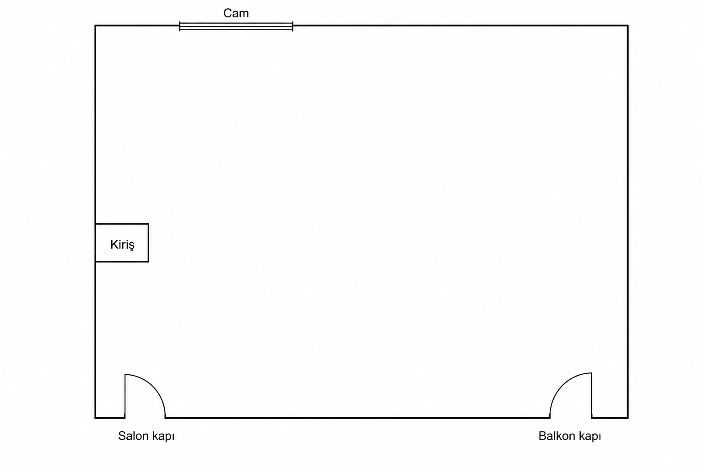

Salon kapı
İçeri açılır. Eni henüz yazılmadı.
Senin çizimin · ekstra yok · kapı yerleri sabit
Altta salon + balkon kapısı. Karşıda cam. Solda yalnızca odaya çıkan kiriş. Dışarı ekstra girinti yok.
Önceki planda yanlışlıkla dışarı girinti eklenmiş ve kapılar kaydırılmıştı. Bu sürüm sadece senin çizimin.

Geometri çiziminden; sayılar senin tarifinden. Yeni şekil uydurulmadı.
İçeri açılır. Eni henüz yazılmadı.
İçeri açılır · 50 cm · duvar bitiminde / köşede.
60 cm cam; yanında 50 ve 60 cm duvar → üst hat 170 cm.
Odaya doğru çıkıntı: hat 40 cm, içeri 10 cm. Pervaz sonrası 5 cm duvar. Bu bir girinti değil — kiriş.
Sağa / duvar boyunca 75 cm devam (senin ölçün). Dışarı niş çizilmedi.
110 cm sonra balkon köşesi; dönüş sonrası 170 cm düz duvar (kapılar arası / alt hat).
Mobilya, kapı yerlerini ve kirişi bozmadan.
Karşı cam önünde / ofset dar çalışma masası. Alt kapılara sırt.
BESTÅ 120 veya ≤160 cm oturma. Balkon salınımına değmez.
Kiriş odaya 10 cm taşar; yanında duvar yüzüne ince raf / askı. Dışarı kutu nişi yok.
Salon ↔ balkon aksı açık kalır.
Aynı Beşiktaş siyah-beyaz paket; yerleşim krokiye göre.
Cam duvarına. 303.397.35
ikea.com.tr →702.611.50
ikea.com.tr →Sağ düz duvara. 590.594.61
ikea.com.tr →Sağ duvar veya kapılar arası değil.
vivense.com →